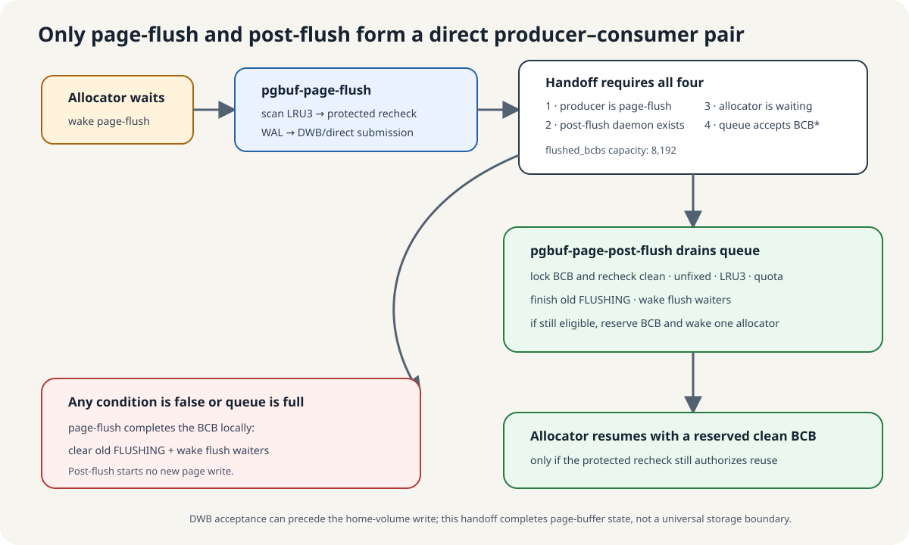

timer pass와 demand wake는 서로 다른 admission rule을 가집니다
pgbuf-page-flush는 기본 1,000 ms인 page_bg_flush_interval만큼 pause합니다. 0이면 wake가 올 때까지 무기한 기다립니다. normal victim search가 실패하거나, clean bottom 제거 뒤 dirty bottom이 드러나거나, 선택한 victim scan이 reusable BCB를 못 찾으면 allocation/victim pressure가 깨웁니다.
sleep 중 관찰된 demand wake는 pgbuf_flush_victim_candidates()를 최소 한 번 호출하게 합니다. timer timeout은 direct-victim waiter가 있거나 충분한 victim request 뒤 sampled hit ratio가 99.9% 아래일 때만 호출합니다. pressure가 남으면 task 한 번에 여러 call을 반복할 수 있고, timed pass가 page를 하나도 submit하지 않을 수도 있습니다.
selection은 candidate를 기록하고 protected recheck가 submission을 허가합니다
- pressure를 읽고 LRU별 priority와 scan budget을 계산합니다.
- LRU mutex를 하나씩 잡고 cold LRU3 node를 따라가며 candidate BCB pointer와 VPID를 저장합니다.
- LRU lock을 놓고 sequentiality를 위해 candidate를 VPID로 sort할 수 있습니다.
- candidate마다 BCB를 lock하고 같은 VPID, DIRTY, 현재 FLUSHING 없음, 여전히 LRU3, fix 0을 다시 확인합니다.
- WAL boundary가 준비되지 않았으면 skip하고 log-flush를 깨웁니다. allocator pressure에서는 필요한 log boundary를 한 번 force하고 재시도할 수 있습니다.
- 하나의 stable generation을 copy하여 DWB 또는 direct I/O로 submit하고 필요하면 neighbor page도 포함합니다.
512 MiB/16 KiB 예에서 B=32,768입니다. 기본 1% unboosted selection budget은 327개 check이고, 최대 10× boost는 3,270개로 12,800-page 200 MiB cap보다 작습니다. 이것은 inspection budget이지 write 개수 보장이 아닙니다.
“submission 완료”와 “BCB bookkeeping 미완료”를 구분합니다

이 시점에는 stable page generation이 설정된 DWB/direct-write submission boundary를 넘었지만, BCB에는 아직 이전 flush가 진행 중이라고 기록되어 있습니다. 이 state를 clear하고 flush waiter를 깨우며 clean frame을 기다리는 allocator에 직접 줄지 판단하는 일은 CPU-side bookkeeping입니다. handoff는 이 bookkeeping 담당자만 바꾸며 page write를 반복하지 않습니다.
- 이동하는 것: copy한 page image가 아니라 control record를 가리키는
PGBUF_BCB *하나입니다. - 받는 곳: bounded
flushed_bcbsqueue를 거쳐 post-flush daemon이 받습니다. - 받은 쪽이 하는 일: 현재 BCB를 lock하고 다시 확인한 뒤 이전
FLUSHINGstate를 clear하고 flush waiter를 깨우며, 가능하면 clean frame을 allocator에 reserve합니다. - 여기서 하지 않는 일: post-flush는 새 page I/O를 시작하지 않습니다.
page-flush가 submission을 만들었고, post-flush가 존재하며, allocator가 기다리고, 8,192-entry queue가 pointer를 받아야만 delegate합니다. 조건 하나라도 맞지 않으면 page-flush가 같은 BCB bookkeeping을 직접 수행합니다.
DWB가 켜져 있으면 successful submission은 stable image가 DWB에 들어갔다는 뜻일 수 있어 home-volume write보다 앞섭니다. 따라서 이 handoff는 page-buffer submission boundary를 나타낼 뿐, 보편적인 disk durability나 transaction durability를 뜻하지 않습니다.
consumer는 allocator handoff 전에 현재 BCB state를 다시 확인합니다
Post-flush는 queue가 빌 때까지 drain합니다. pointer마다 BCB를 lock하고 fix 0, LRU3 membership, clean/eligible flag, private list라면 quota를 다시 봅니다. submission 뒤 resident page가 fix되거나 다시 dirty해지거나 hot해졌을 수 있습니다.
현재도 eligible해야 live direct-victim waiter 하나에게 reserve할 수 있습니다. 결과와 무관하게 old FLUSHING generation을 끝내고 BCB flush waiter를 깨웁니다. work를 consume하면 다음 pause는 1 ms로 reset되고, 연속 idle timeout은 10 ms, 100 ms를 거쳐 wake-only infinite sleep으로 갑니다.
local traversal은 bounded이고 elapsed time은 WAL과 storage가 좌우합니다
| 역할 | Structural work | Wall-time 추가 요소 |
|---|---|---|
| Page-flush | O(T + L + K + C log C + C·N) | LRU/BCB contention, WAL, DWB, file I/O, scheduling |
| Post-flush | O(Q + S + F) | queue CAS, BCB/thread mutex, allocator와 flush waiter wake |
T는 thread-counter shard, L은 LRU, K는 inspected node, C는 candidate, N은 neighbor span, Q는 consumed BCB pointer, S는 stale allocator wait record, F는 flush waiter입니다.
selection과 completion을 별도 ownership step으로 trace합니다
Pinned page_buffer.c:3780–4169,10925–10952,15420–15589,16971–17204를 읽습니다.